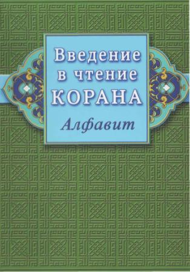
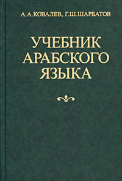
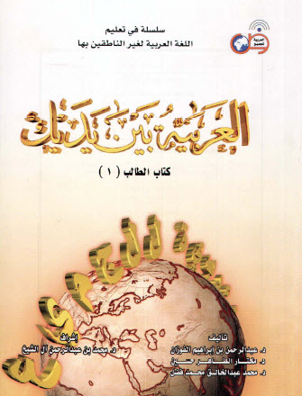
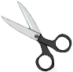
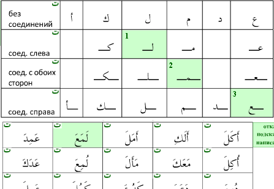
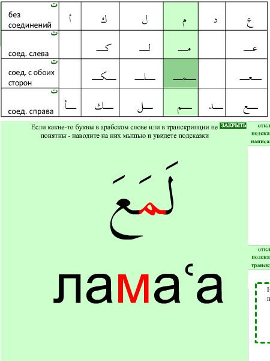
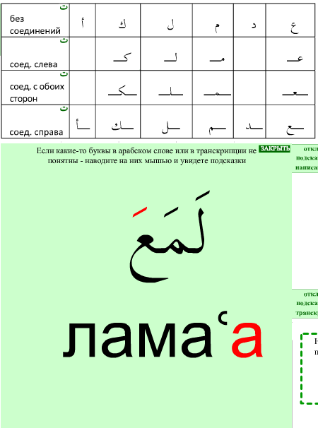

Обращение автора программы к пользователям курса
|
Ассаламу алейкум! По воле Аллаха моя жизнь сложилась таким образом, что я на долго остался без работы. В это время я смог плотно заняться этим проектом на едва знакомой мне технологии флеш, чтобы у всех желающих появилась больше шансов изучить арабский язык. Говорящий учебник - это отличная вещь, на мой взгляд. По-сути, это вроде и книга, но в тоже время любое слово и любую букву вы нажимаете и слышите ее. Так у вас появляется уверенность, что вы правильно читаете их. У многих нет времени ходить на курсы арабского, многие могут стесняться по 100 раз переспрашивать учителя - а эта программка терпит все. Спрашивайте ее сколько хотите. Поэтому, думаю, даже любой стесняшка может теперь освоить арабское чтение. Меня никто не просил делать эту программу. Но я сделал ее, ощущая большую потребность в ней и понимая, что Аллах наделил меня достаточными способностями для ее написания. В общей сложности эта работа заняла, наверное, около 2-х месяцев плотной работы с утра до вечера. Это немалый отрезок времени, для человека из небогатой семьи, у которого на попечении находится жена и ребенок. Разумеется, я влез в долги. Сейчас, хвала Аллаху, я устроился сразу на 2 хорошо оплачиваемые работы, которые, правда, отнимают почти все мое время и иншаАллах помогут быстро разобраться с долгами. Но у меня есть еще много интересных идей, связанных с арабским языком, которые мне хотелось бы реализовать! (и переживаю за них). Поэтому, если найдутся люди, кто сочтет мою работу важной и захочет стать ее соавтором - с радостью приму пожертвования любых размеров. Вот мои кошельки: Яндекс-Деньги 41001512310147
WebMoney R548505797113 Чем больше средств будет в моем распоряжении, тем больше времени получится уделять разработкам программ, и т.п. Поэтому, ваши взносы могут повлиять на состояние арабского языка в России. Также я планировал перевести программу на английский язык и попробовать "заявить о себе" в англоязычном интернете. Я пробовал обращаться в некоторые мусульманские организации - но пока ни откуда не получил положительного ответа. Так что вся основная надежда на сознательность рядовых людей, кто уважает сайт www.ar-ru.ru, в конце концов. Если у кого-то есть влиятельные знакомые и вы сможете их привлечь к финансированию проекта - иншаАллах вам запишется за это большая награда, а также награда тех, кто будет пользоваться его плодами. В ближайшие месяцы планируется добавить в курс анимированные объяснения всех сложных арабских звуков, а также 14-й урок, где будут собраны все молитвы намаза, так, что вы их легко сможете выучить. Поэтому посещайте сайт www.ar-ru.ru и следите за новостями. Все отзывы, вопросы и пожелания пишите на arabru@gmail.com |
|  |  |  |  |
|
Курс предназначен для тех, кто хочет научиться читать по-арабски. За основу курса взята книжка "Введение в чтение Корана. Алфавит" изд-ва "Диля", фонетика дается по "Учебнику арабского языка" Ковалева, Шарбатова, урок "сложные арабские звуки... познаются в сравнении" составлен по курсу "Арабия байна ядайк". Анимации написаний букв из урока "Алфавит: буквы, звуки..." взяты из флеш-учебника "Арабеск", а картинка речевого аппарата взята с сайта nuruliman.ru. Все материалы учебников разделены с детализацией до слова и сопряжены со звуком. Озвучивание делал палестинский араб из города Аль-Халил (Хеврон), лингвист по образованию и преподаватель арабского языка. Помимо звука, вся новая для ученика информация сопровождается анимированными подсказсками. Они вызываются зеленой арабской буквой "та", что значит "тафсилан" - "подробно, членораздельно" и в то же время это как бы улыбка, повод порадоваться для ученика, если он столкнулся с трудностью. Начинающий ученик порой, глядя на арабское слово, не может понять, из каких букв оно состоит. - поэтому сделана подсказка, подсвечивающая при наведении на любое слово, конкретные формы написания, образующие слово.

Чтобы начинающему ученику было проще составить соответствие между арабской графикой и звуками, нажав на вы увидите подробный разбор слова. Наводя на каждую букву, вы увидите, какая транскрипция и форма написания ей соответствует, а нажав мышкой, услышите название буквы и произношение.

Часть 3 также снабжена анимационными разборами, вызываемыми нажатием кнопки . Не забывайте, что в большинстве уроков есть несколько страниц, кнопка переключения которых находится в правом верхнем углу флеш-файлов. |
Методика занятий и распределение курса по времени
|
В программе нет кнопок "play", нажав которую вы сидели бы расслабившись, длительно слушая и просматривая учебный материал. Программа требует от вас постоянной активности: внимательного вдумчивого чтения и постоянного участия (тыканием мыши). Часть 1, по сути, является сводной таблицей, который вы будете пользоваться на протяжении всех занятий. Поэтому, для начала, просто познакомьтесь со звуками урока 1.1, внимательно прочитав их описания, прослушав и постаравшись воспроизвести в первом приближении. Чтобы глубже понять звуки прослушайте их уже с огласовками в уроке 1.2. Ну и урок 1.3 смотрите по мере надобности. Таким образом, первый урок - это беглое знакомство с частью 1. Оно должно занять 1,5 - 2 часа. Остальные уроки - также занимают в среднем 1,5 - 2 часа. Часть 2 содержит основной объем курса. Все буквы алфавита в ней разбиты на 5 уроков и подробно разбираются. Вот здесь, в каждом уроке возвращайтесь к Части 1 и тщательно осваивайте произношение звуков каждого урока - (там в среднем 6 букв). Таким образом, основная нагрузка распределится на 5 порций. Чтобы усвоить арабские буквы, возьмите таблицу написаний и русские транскрипции. Глядя на транскрипции подбирайте из таблицы написаний нужные формы арабских букв и составляйте слова. Порядок написаний букв дается в Уроке 1.1. (режим написания). Часть 3 содержит мелкие правила, усвоение которых не требует больших усилий. Поэтому в этой части сделайте упор на оттачивание правильного произношения и беглого чтения. Итого, 13 уроков по 2 часа = 26 часов занятий, и вы, иншаАллах, овладеете арабским чтением и письмом. Возникающие при занятиях вопросы по конкретным урокам лучше всего обсуждать на сайте, где эти уроки опубликованы онлайн www.ar-ru.ru/arabiya-flash - оставляя комментарии. Сообщения об ошибках присылайте на почту arabru@gmail.com |
Общие рекомендации - знакомьтесь поверхностно
На начальном этапе не углубляйтесь слишком в детальное освоение звуков. На первом уроке достаточно поверхностного знакомства. Просто посмотрите, какие есть буквы, послушайте как они звучат. Просмотрите описание их произношения.
Вы подробнее разберете все звуки в Части 2, где у вас будет возможность послушать их "со всех ракурсов" - как они звучат в разных словах.
Урок 1.1. Алфавит: буквы, звуки, транскрипции, произношение, написание
Урок 1.2. Огласовки - вспомогательные знаки для передачи гласных
Урок 1.3. Непонятные арабские звуки... познаются в сравнении
Часть 2. Формы написания букв и чтение слов.
Общие рекомендации - алгоритм письменности
Так как арабскую письменность называют вязью, чтобы лучше понять ее, надо почувствовать себя на время вязальщиком. Почти все буквы связываются друг с другом слева и справа, кроме шести (в таблице написания таких букв вы увидите пробелы). Эти шесть букв связываются с другими только справа. По левую сторону от этих букв вязь всегда обрывается.
Общий алгоритм такой: вы держите в уме слово, которое хотите написать, и начинаете подбирать буквы под это слово из таблицы написаний, с учетом того, будут ли у этой буквы соединения с обоих сторон, только слева, только справа, или вообще не будет. Когда в слове идет одна из 6 букв, которые имеют только две формы написания, вязь обрывается, и со следующей буквы вы начинаете вязь сначала. Вязь может обрываться несколько раз внутри одного слова.
Вот и вся основная идея. Думаем, занимаясь по упражнениям с подсказками вы без проблем освоите эту идею.
Домашнее задание: для всех уроков Части 2, чтобы закрепить пройденные уроки обязательно надо прописывать арабские слова, глядя на траскрипции. Смотрите на русские буквы и подбирайте под них подходящие формы арабских букв из таблицы написаний, и составляйте вязь.
Часть 3. Дополнительные знаки и правила чтения
Урок 7. Сукун - отсутствие гласного
Урок 8. Ташдид - усиление согласного
Урок 9. Танвин - оканчивание слов на "н"
Урок 10. Мадд - удлинение гласных
Урок 11. Заменяющие Алиф буквы
Урок 13. Чтение определенного артикля Аль